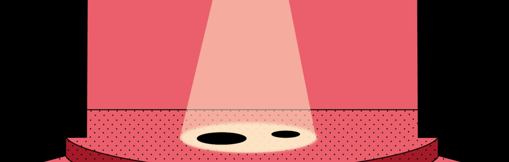

Scenography for Your Borrowed Stardust
Scenography, with Michel Winckler, for an immersive live performance weaving movement, spoken word, live music and installation together as part of Black Hole Week 2026.
In collaboration with Centre of Gravity and transdisciplinary artist and researcher Clara Ferreira Cores.

↗